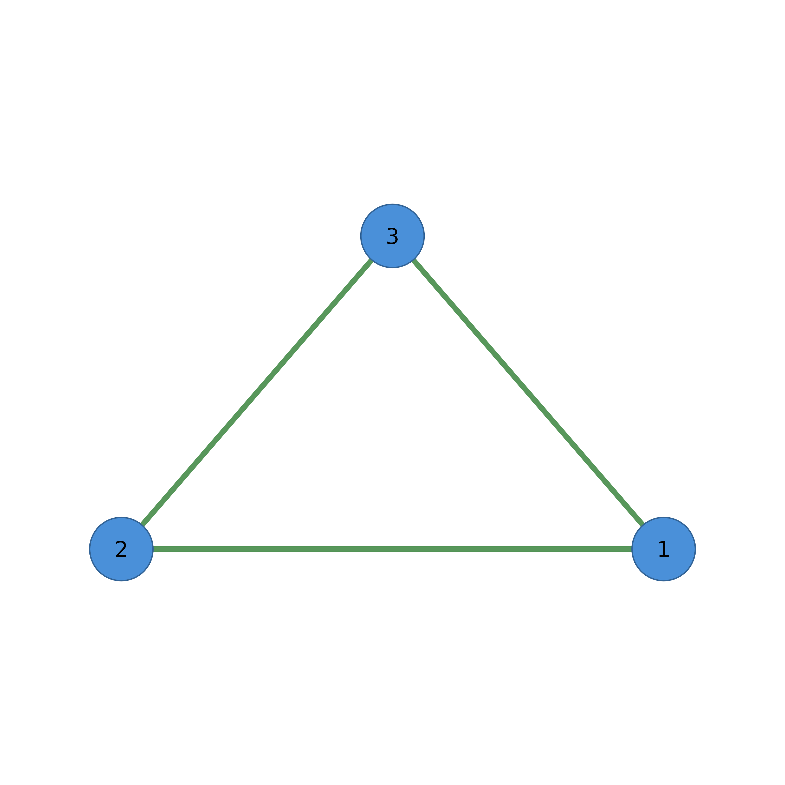

Creates a lightweight cograph_network object from various network inputs.
The resulting object is a named list with all data accessible via $.
Arguments
- x
Network input. Can be:
A square numeric matrix (adjacency/weight matrix)
A data frame with edge list (from, to, optional weight columns)
An igraph object
A statnet network object
A qgraph object
A tna object
An existing cograph_network object (returned as-is)
- directed
Logical. Force directed interpretation. NULL for auto-detect.
- simplify
Logical or character. If FALSE (default), every transition from tna sequence data is a separate edge. If TRUE or a string ("sum", "mean", "max", "min"), duplicate edges are aggregated.
- ...
Additional arguments (currently unused).
Value
A cograph_network object: a named list with components:
nodesData frame with id, label, and optional layout or metadata columns
edgesData frame with from, to, weight columns
directedLogical indicating if network is directed
weightsFull n×n weight matrix when available for matrix/TNA round-trips, or NULL
dataOriginal estimation data (sequence matrix, edge list, etc.), or NULL
metaConsolidated metadata list with sub-fields:
source(input type string),layout(layout info list or NULL),tna(TNA metadata or NULL)node_groupsOptional node groupings data frame
A cograph_network object. See as_cograph.
Details
The cograph_network format is designed to be:
Lean: Only essential data stored, computed values derived on demand
Modern: Uses named list elements instead of attributes for clean
$accessCompatible: Works seamlessly with splot() and other cograph functions
Use getter functions for programmatic access:
get_nodes, get_edges, get_labels,
n_nodes, n_edges
Use setter functions to modify:
set_nodes, set_edges, set_layout
Examples
mat <- matrix(c(0, 1, 1, 1, 0, 1, 1, 1, 0), nrow = 3)
net <- as_cograph(mat)
get_nodes(net)
#> id label name x y
#> 1 1 1 1 NA NA
#> 2 2 2 2 NA NA
#> 3 3 3 3 NA NA
get_edges(net)
#> from to weight
#> 1 1 2 1
#> 2 1 3 1
#> 3 2 3 1
splot(net)

mat <- matrix(c(0, 1, 1, 1, 0, 1, 1, 1, 0), nrow = 3)
net <- to_cograph(mat)